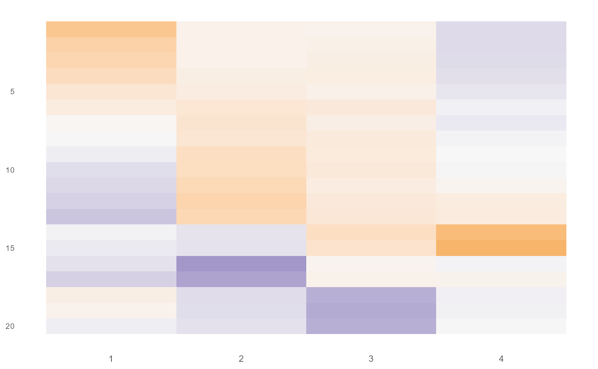

bifaToolkits package: toy-data workflows for each method
Source:vignettes/toy_workflows.Rmd
toy_workflows.Rmd0. Install / load
Many methods are implemented in optional backends (GitHub/Bioconductor packages, or bundled scripts).
# install.packages("remotes")
# remotes::install_local("path/to/bifaToolkits") # or install from your repo
library(bifaToolkits)Check what you can run on your machine:
library(bifaToolkits)
available_backends()
#> backend requires available
#> 1 bmsfa MSFA TRUE
#> 2 stack_fa MSFA TRUE
#> 3 ind_fa MSFA TRUE
#> 4 momss BFR.BE TRUE
#> 5 sufa SUFA TRUE
#> 6 pfa scripts TRUE
#> 7 tetris scripts TRUE
#> 8 curated_ovarian curatedOvarianData FALSE
#> hint
#> 1 bifaToolkits::install_backend("bmsfa")
#> 2 bifaToolkits::install_backend("stack_fa")
#> 3 bifaToolkits::install_backend("ind_fa")
#> 4 bifaToolkits::install_backend("momss")
#> 5 bifaToolkits::install_backend("sufa")
#> 6 Bundled in package under inst/extdata/
#> 7 Bundled in package under inst/extdata/
#> 8 BiocManager::install("curatedOvarianData")If you need an optional backend (and it is unavailable above), install it via:
install_backend("bmsfa") # installs MSFA from GitHub
install_backend("momss") # installs BFR.BE + Bioc deps
install_backend("sufa") # installs SUFA from GitHub (build_vignettes = FALSE)
install_backend("curated_ovarian")and no need t library it after installing.
Note on MOM-SS/BFR.BE. We only support MOM-SS in “BFR.BE” backend right now. If you want to run other method mentioned in their paper, eg. Laplace-SS, please refer to their original repository.
Note on SUFA.
You need to install PROJ, sqlite3 and GDAL onto PATH. Several updates should be done, for example, terra. These might be difficult.
Note on BMSFA install_backend(“bmsfa”) installs the MSFA package from Mavis’s GitHub, which allows user-input scaling and centering options. The original MSFA package on CRAN does not have these options.
Note on script backends (PFA / Tetris).
In this package, PFA and Tetris are bundled underinst/extdata/pfa/andinst/extdata/tetris/.
They are loaded on demand viaload_backend("pfa")orload_backend("tetris"). PFA may compilePFA.cpp, which requires a working C++ toolchain.
If install_backend function does not work, you can always install them yourself then run the bifaToolkits package.
1. Load toy data (shipped in the package)
The toy data live in inst/extdata/toy.rds. You can load
it using system.file().
toy <- readRDS(system.file("extdata", "toy.rds", package = "bifaToolkits", mustWork = TRUE))
str(toy, max.level = 2)
#> List of 11
#> $ Y_mat : num [1:150, 1:20] -0.0519 2.1092 1.4448 -0.4867 -1.6286 ...
#> $ Y_list :List of 3
#> ..$ : num [1:52, 1:20] -0.0519 2.1092 1.4448 -0.4867 -1.6286 ...
#> .. ..- attr(*, "dimnames")=List of 2
#> ..$ : num [1:58, 1:20] 3.15 -1.33 3.33 0.73 -1.09 ...
#> .. ..- attr(*, "dimnames")=List of 2
#> ..$ : num [1:40, 1:20] 0.323 0.451 -2.435 -1.283 2.428 ...
#> .. ..- attr(*, "dimnames")=List of 2
#> $ n_s : int [1:3, 1] 52 58 40
#> $ A : num [1:150, 1:3] 1 1 1 1 1 1 1 1 1 1 ...
#> $ Phi : num [1:20, 1:4] -1 -0.895 -0.789 -0.684 -0.579 ...
#> $ SigmaPhi : num [1:20, 1:20] 1.762 1.507 1.252 0.997 0.742 ...
#> $ LambdaList :List of 3
#> ..$ : num [1:20, 1] -0.857 -0.718 0 0 0 ...
#> ..$ : num [1:20, 1] 0 0 0 0.866 0 ...
#> ..$ : num [1:20, 1] 0.73 0 0 0 0 ...
#> $ SigmaLambdaList:List of 3
#> ..$ : num [1:20, 1:20] 0.735 0.616 0 0 0 ...
#> ..$ : num [1:20, 1:20] 0 0 0 0 0 0 0 0 0 0 ...
#> ..$ : num [1:20, 1:20] 0.532 0 0 0 0 ...
#> $ SigmaMarginal :List of 3
#> ..$ : num [1:20, 1:20] 2.813 2.123 1.252 0.997 0.742 ...
#> ..$ : num [1:20, 1:20] 2.118 1.507 1.252 0.997 0.742 ...
#> ..$ : num [1:20, 1:20] 2.59 1.507 1.252 0.997 0.742 ...
#> $ Psi_list :List of 3
#> ..$ : num [1:20, 1:20] 0.316 0 0 0 0 ...
#> ..$ : num [1:20, 1:20] 0.356 0 0 0 0 ...
#> ..$ : num [1:20, 1:20] 0.296 0 0 0 0 ...
#> $ Psi_mat : num [1:20, 1:3] 0.316 0.356 0.914 0.274 0.433 ...The package wrappers expect Y_list: a list of study
matrices with the same number of columns (variables).
Throughout this vignette: - S = number of studies -
P = number of variables
2. Common post-processing outputs
Each postprocess_*() function returns a list of
covariance components used in the tutorial:
-
Phi/SigmaPhi: shared loadings / shared covariance -
LambdaList/SigmaLambdaList: study-specific loadings / covariances (if the method has them) -
PsiorPsiList: diagonal residual variances -
SigmaMarginal: per-study marginal covariance (shared + specific + residual)
The selection helpers choose dimensions using an eigenvalue
proportion rule (see select_k_from_sigma()), and
the refit_*() helpers wrap the “initial fit → select dims →
refit” workflow.
Method A: BMSFA (MSFA backend)
A1. Fit
You specify: - k: number of shared factors -
j_s: number of study-specific factors (length
S)
You can control MCMC via
control = list(nrun = ..., burn = ...).
A2. Post-process
post0 <- postprocess_bmsfa(fit0)
names(post0)
#> [1] "Phi" "SigmaPhi" "LambdaList" "SigmaLambdaList"
#> [5] "PsiList" "SigmaMarginal"A3. Select dimensions and refit
select_k_bmsfa(post0, cutoff = 0.05)
#> [1] 4
select_js_bmsfa(post0, cutoff = 0.05)
#> [[1]]
#> [1] 1
#>
#> [[2]]
#> [1] 2
#>
#> [[3]]
#> [1] 2
# refit
out <- fit_bmsfa_2step(
Y_list = Y_list,
post_fit0 = post0,
cutoff = 0.05,
control = list(nrun = 1000, burn = 200)
)
#> Selected K = 4
#> Selected j_s = c(1, 2, 2)
#> r= 1000
# Or `fit_bmsfa` with the selected k and j_s, and `postprocess` again.A4. Fit two-step BMSFA in one call
out <- fit_bmsfa_2step(
Y_list = Y_list,
k = 5, # Overspecified
j_s = rep(2, S),
centering = TRUE,
scaling = FALSE,
control = list(nrun = 1000, burn = 200)
)
#> r= 1000
#> Selected K = 4
#> Selected j_s = c(2, 2, 2)
#> r= 1000Method B: Stack FA (MSFA backend)
“Stack FA” stacks all studies and fits a single factor model.
B1. Fit
fit0 <- fit_stack_fa(
Y_list = Y_list,
k = 5, # Overspecified
centering = TRUE,
scaling = FALSE,
control = list(nrun = 1000, burn = 200)
)
#> [1] 1000B2. Post-process
postprocess_stack_fa() takes S so it can
return a per-study list for SigmaMarginal.
post0 <- postprocess_stack_fa(fit0, S = S)
names(post0)
#> [1] "Phi" "SigmaPhi" "Psi" "SigmaMarginal"B3. Select K and refit
select_k_stack_fa(post0, cutoff = 0.05)
#> [1] 4
out <- fit_stack_fa_2step(
Y_list = Y_list,
post_fit0 = post0,
cutoff = 0.05,
control = list(nrun = 1000, burn = 200)
)
#> Selected K = 4
#> [1] 1000B4. Fit two-step Stack FA in one call
out <- fit_stack_fa_2step(
Y_list = Y_list,
k = 4,# Overspecified
control = list(nrun = 1000, burn = 200)
)
#> [1] 1000
#> Selected K = 4
#> [1] 1000Method C: Ind FA (MSFA backend)
“Ind FA” fits separate factor models per study.
C1. Fit
You specify j_s as either: - a single integer (recycled
to all studies), or - a length-S integer vector.
fit0 <- fit_ind_fa(
Y_list = Y_list,
j_s = rep(3, S),
centering = TRUE,
scaling = FALSE,
control = list(nrun = 1000, burn = 200)
)
#> [1] 1000
#> [1] 1000
#> [1] 1000C2. Post-process, select J_s, refit
post0 <- postprocess_ind_fa(fit0)
select_js_ind_fa(post0, cutoff = 0.05)
#> [[1]]
#> [1] 3
#>
#> [[2]]
#> [1] 3
#>
#> [[3]]
#> [1] 3
out <- fit_ind_fa_2step(
Y_list = Y_list,
post_fit0 = post0,
cutoff = 0.05,
control = list(nrun = 1000, burn = 200)
)
#> Selected j_s = c(3, 3, 3)
#> [1] 1000
#> [1] 1000
#> [1] 1000C3. Fit two-step Ind FA in one call
out <- fit_ind_fa_2step(
Y_list = Y_list,
j_s = rep(3, S),
centering = TRUE,
scaling = FALSE,
control = list(nrun = 1000, burn = 200)
)
#> [1] 1000
#> [1] 1000
#> [1] 1000
#> Selected j_s = c(3, 3, 3)
#> [1] 1000
#> [1] 1000
#> [1] 1000Method D: MOM-SS (BFR.BE backend)
MOM-SS uses the BFR.BE backend and requires: -
q (aka k): number of shared factors - optional
covariates X (passed to the backend as v)
In this package wrapper, if you pass
Y_list, the wrapper stacks it into x, builds
the membership matrix b, and forwards
q and v.
D1. Prepare covariates (optional)
X can be either: - a single matrix with
sum(nrow(Y_list)) rows, or - a list of matrices aligned to
Y_list (which will be stacked).
Example: two synthetic covariates per subject:
D2. Fit and post-process
fit <- fit_momss(
Y_list = Y_list,
k = 6,
X = X_list, # optional
scaling = FALSE
)
#> [1] "CV varimax rotation"
#> [1] 1
#> [1] 2
#> [1] 3
#> [1] 4
#> [1] 5
#> [1] 6
#> [1] 7
#> [1] 8
#> [1] 9
#> [1] 10
#> [1] "CV no rotation"
#> [1] 1
#> [1] 2
#> [1] 3
#> [1] 4
#> [1] 5
#> [1] 6
#> [1] 7
#> [1] 8
#> [1] 9
#> [1] 10
post <- postprocess_momss(fit)
names(post)
#> [1] "Phi" "SigmaPhi" "Psi" "alpha"
#> [5] "B" "SigmaMarginal"
# post$SigmaPhi, post$Psi, post$alpha, post$B, post$SigmaMarginalMethod E: SUFA (SUFA backend)
In the tutorial workflow, we typically: - center within each study
(center = TRUE) - do not rescale variances
(scale = FALSE) - specify qmax and
nrun
E1. Fit and post-process
#install_backend("sufa")
fit <- fit_sufa(
Y_list = Y_list,
k = 6, # or kmax = 6 depending on your wrapper
nrun = 1000,
center = TRUE,
scale = FALSE
)
post <- postprocess_sufa(fit)
names(post)Method F: PFA (script backend)
PFA scripts are bundled in inst/extdata/pfa/. The
wrapper: 1) loads the backend via load_backend("pfa")
2) centers/scales each study (defaults center=TRUE,
scale=FALSE)
3) stacks into one matrix X and builds the study id vector
b
4) calls the backend PFA(X = X, b = b, k = ..., ...)
F1. Fit
fit <- fit_pfa(
Y_list = Y_list,
k = 6, # Overspecified
center = TRUE,
scale = FALSE,
nrun = 1000,
burn = 500
# other backend parameters via ...
)
#>
#> Attaching package: 'pracma'
#> The following objects are masked from 'package:psych':
#>
#> logit, polar
#> The following object is masked from 'package:partitions':
#>
#> perms
#> The following objects are masked from 'package:LaplacesDemon':
#>
#> logit, loglog, Mode
#> The following object is masked from 'package:Hmisc':
#>
#> ceil
#> The following objects are masked from 'package:Matrix':
#>
#> expm, lu, tril, triu
#> The following object is masked from 'package:mgcv':
#>
#> magic
#> The following object is masked from 'package:ncvreg':
#>
#> std
#>
#> Attaching package: 'expm'
#> The following objects are masked from 'package:pracma':
#>
#> expm, logm, sqrtm
#> The following object is masked from 'package:Matrix':
#>
#> expm
#> | | | 0% | | | 1% | |= | 1% | |= | 2% | |== | 2% | |== | 3% | |== | 4% | |=== | 4% | |=== | 5% | |==== | 5% | |==== | 6% | |===== | 6% | |===== | 7% | |===== | 8% | |====== | 8% | |====== | 9% | |======= | 9% | |======= | 10% | |======= | 11% | |======== | 11% | |======== | 12% | |========= | 12% | |========= | 13% | |========= | 14% | |========== | 14% | |========== | 15% | |=========== | 15% | |=========== | 16% | |============ | 16% | |============ | 17% | |============ | 18% | |============= | 18% | |============= | 19% | |============== | 19% | |============== | 20% | |============== | 21% | |=============== | 21% | |=============== | 22% | |================ | 22% | |================ | 23% | |================ | 24% | |================= | 24% | |================= | 25% | |================== | 25% | |================== | 26% | |=================== | 26% | |=================== | 27% | |=================== | 28% | |==================== | 28% | |==================== | 29% | |===================== | 29% | |===================== | 30% | |===================== | 31% | |====================== | 31% | |====================== | 32% | |======================= | 32% | |======================= | 33% | |======================= | 34% | |======================== | 34% | |======================== | 35% | |========================= | 35% | |========================= | 36% | |========================== | 36% | |========================== | 37% | |========================== | 38% | |=========================== | 38% | |=========================== | 39% | |============================ | 39% | |============================ | 40% | |============================ | 41% | |============================= | 41% | |============================= | 42% | |============================== | 42% | |============================== | 43% | |============================== | 44% | |=============================== | 44% | |=============================== | 45% | |================================ | 45% | |================================ | 46% | |================================= | 46% | |================================= | 47% | |================================= | 48% | |================================== | 48% | |================================== | 49% | |=================================== | 49% | |=================================== | 50% | |=================================== | 51% | |==================================== | 51% | |==================================== | 52% | |===================================== | 52% | |===================================== | 53% | |===================================== | 54% | |====================================== | 54% | |====================================== | 55% | |======================================= | 55% | |======================================= | 56% | |======================================== | 56% | |======================================== | 57% | |======================================== | 58% | |========================================= | 58% | |========================================= | 59% | |========================================== | 59% | |========================================== | 60% | |========================================== | 61% | |=========================================== | 61% | |=========================================== | 62% | |============================================ | 62% | |============================================ | 63% | |============================================ | 64% | |============================================= | 64% | |============================================= | 65% | |============================================== | 65% | |============================================== | 66% | |=============================================== | 66% | |=============================================== | 67% | |=============================================== | 68% | |================================================ | 68% | |================================================ | 69% | |================================================= | 69% | |================================================= | 70% | |================================================= | 71% | |================================================== | 71% | |================================================== | 72% | |=================================================== | 72% | |=================================================== | 73% | |=================================================== | 74% | |==================================================== | 74% | |==================================================== | 75% | |===================================================== | 75% | |===================================================== | 76% | |====================================================== | 76% | |====================================================== | 77% | |====================================================== | 78% | |======================================================= | 78% | |======================================================= | 79% | |======================================================== | 79% | |======================================================== | 80% | |======================================================== | 81% | |========================================================= | 81% | |========================================================= | 82% | |========================================================== | 82% | |========================================================== | 83% | |========================================================== | 84% | |=========================================================== | 84% | |=========================================================== | 85% | |============================================================ | 85% | |============================================================ | 86% | |============================================================= | 86% | |============================================================= | 87% | |============================================================= | 88% | |============================================================== | 88% | |============================================================== | 89% | |=============================================================== | 89% | |=============================================================== | 90% | |=============================================================== | 91% | |================================================================ | 91% | |================================================================ | 92% | |================================================================= | 92% | |================================================================= | 93% | |================================================================= | 94% | |================================================================== | 94% | |================================================================== | 95% | |=================================================================== | 95% | |=================================================================== | 96% | |==================================================================== | 96% | |==================================================================== | 97% | |==================================================================== | 98% | |===================================================================== | 98% | |===================================================================== | 99% | |======================================================================| 99% | |======================================================================| 100%Method G: Tetris (script backend)
Tetris scripts are bundled in inst/extdata/tetris/.
The “3-step” workflow from the tutorial is:
- initial run:
tetris(..., fixed_bigT = FALSE)
- select
big_T:choose.A(fit, alpha_IBP = alpha, S = S)
- fixed run:
tetris(..., fixed_bigT = TRUE, bigT = big_T)
G1. Manual 3-step pipeline
fit1 <- fit_tetris(Y_list, alpha = "auto", beta = 1, fixed_bigT = FALSE, nrun = 500, burn = 200, nprint = 100) # Reduced iterations a faster runtime
#> iter= 100
#> iter= 200
#> iter= 300
#> iter= 400
#> iter= 500
big_T <- select_T_tetris(fit1) # passes alpha_IBP and S from fit1 metadata by default
fit2 <- fit_tetris(Y_list, alpha = fit1$meta$alpha, beta = 1, fixed_bigT = TRUE, bigT = big_T,
nrun = 500, burn = 200, nprint = 100)
#> iter= 100
#> iter= 200
#> iter= 300
#> iter= 400
#> iter= 500
out <- postprocess_tetris(fit2)G2. One-shot pipeline (recommended)
out <- fit_tetris_2step(
Y_list = Y_list,
alpha = "auto", # ceiling(1.25 * S)
beta = 1,
nrun = 500,
burn = 200,
nprint = 100
)
#> iter= 100
#> iter= 200
#> iter= 300
#> iter= 400
#> iter= 500
#> iter= 100
#> iter= 200
#> iter= 300
#> iter= 400
#> iter= 500Method H: One-call dispatch that can invoke any method
fit_integrative_fa(method = "bmsfa"|"momss"|..., ...)postprocess_integrative_fa(method = ..., fit)
Example:
fit <- fit_integrative_fa("bmsfa", Y_list = Y_list, k = 4, j_s = rep(2, S))
#> r= 1000
#> r= 2000
#> r= 3000
post <- postprocess_integrative_fa("bmsfa", fit)Visuallization
This function give a nice heatmap plot for the loadings
plot_single_loadings(mat = out$Phi, fill_limits = c(-2, 2)) # Displays grey if values are out of range
Practical tips
- Start with short runs
(
nrun/burn) to validate your pipeline, then increase. - Always check that each study has the same
P(number of columns). - For methods with rotational ambiguity, rely on the package post-processing (e.g., OP alignment) before comparing loadings.
Session info
sessionInfo()
#> R version 4.5.2 (2025-10-31 ucrt)
#> Platform: x86_64-w64-mingw32/x64
#> Running under: Windows 11 x64 (build 26200)
#>
#> Matrix products: default
#> LAPACK version 3.12.1
#>
#> locale:
#> [1] LC_COLLATE=English_United States.utf8
#> [2] LC_CTYPE=English_United States.utf8
#> [3] LC_MONETARY=English_United States.utf8
#> [4] LC_NUMERIC=C
#> [5] LC_TIME=English_United States.utf8
#>
#> time zone: Asia/Shanghai
#> tzcode source: internal
#>
#> attached base packages:
#> [1] stats graphics grDevices utils datasets methods base
#>
#> other attached packages:
#> [1] clue_0.3-66 matrixcalc_1.0-6 R.utils_2.13.0
#> [4] R.oo_1.27.1 R.methodsS3_1.8.2 combinat_0.0-8
#> [7] matlab_1.0.4.1 statmod_1.5.1 RcppArmadillo_15.2.3-1
#> [10] Rcpp_1.1.0 expm_1.0-0 pracma_2.4.6
#> [13] MASS_7.3-65 reshape2_1.4.5 psych_2.5.6
#> [16] partitions_1.10-9 nloptr_2.2.1 mnormt_2.1.1
#> [19] LaplacesDemon_16.1.6 Hmisc_5.2-4 glmnet_4.1-10
#> [22] ggplot2_4.0.1 Matrix_1.7-4 mgcv_1.9-3
#> [25] nlme_3.1-168 ncvreg_3.16.0 mvtnorm_1.3-3
#> [28] bifaToolkits_0.0.1
#>
#> loaded via a namespace (and not attached):
#> [1] Rdpack_2.6.4 polynom_1.4-1 gridExtra_2.3
#> [4] rlang_1.1.6 magrittr_2.0.4 matrixStats_1.5.0
#> [7] compiler_4.5.2 systemfonts_1.3.1 vctrs_0.6.5
#> [10] stringr_1.6.0 pkgconfig_2.0.3 shape_1.4.6.1
#> [13] fastmap_1.2.0 backports_1.5.0 rmarkdown_2.30
#> [16] ragg_1.5.0 xfun_0.55 cachem_1.1.0
#> [19] jsonlite_2.0.0 gmp_0.7-5 parallel_4.5.2
#> [22] cluster_2.1.8.1 R6_2.6.1 bslib_0.9.0
#> [25] stringi_1.8.7 RColorBrewer_1.1-3 rrcov_1.7-7
#> [28] rpart_4.1.24 jquerylib_0.1.4 iterators_1.0.14
#> [31] knitr_1.50 base64enc_0.1-3 splines_4.5.2
#> [34] nnet_7.3-20 tidyselect_1.2.1 rstudioapi_0.17.1
#> [37] yaml_2.3.12 codetools_0.2-20 lattice_0.22-7
#> [40] tibble_3.3.0 intervals_0.15.5 plyr_1.8.9
#> [43] withr_3.0.2 S7_0.2.1 MSFA_0.86
#> [46] evaluate_1.0.5 SUFA_2.2.0 foreign_0.8-90
#> [49] desc_1.4.3 survival_3.8-3 mclust_6.1.2
#> [52] pillar_1.11.1 MatrixGenerics_1.22.0 checkmate_2.3.3
#> [55] foreach_1.5.2 stats4_4.5.2 pcaPP_2.0-5
#> [58] generics_0.1.4 mombf_3.5.4 sparseMatrixStats_1.22.0
#> [61] scales_1.4.0 robust_0.7-5 glue_1.8.0
#> [64] tools_4.5.2 robustbase_0.99-6 data.table_1.17.8
#> [67] BFR.BE_0.1.0 fs_1.6.6 grid_4.5.2
#> [70] rbibutils_2.4 colorspace_2.1-2 fit.models_0.64
#> [73] htmlTable_2.4.3 latex2exp_0.9.6 Formula_1.2-5
#> [76] cli_3.6.5 textshaping_1.0.4 dplyr_1.1.4
#> [79] glasso_1.11 gtable_0.3.6 DEoptimR_1.1-4
#> [82] sass_0.4.10 digest_0.6.39 htmlwidgets_1.6.4
#> [85] farver_2.1.2 htmltools_0.5.9 pkgdown_2.2.0
#> [88] lifecycle_1.0.4